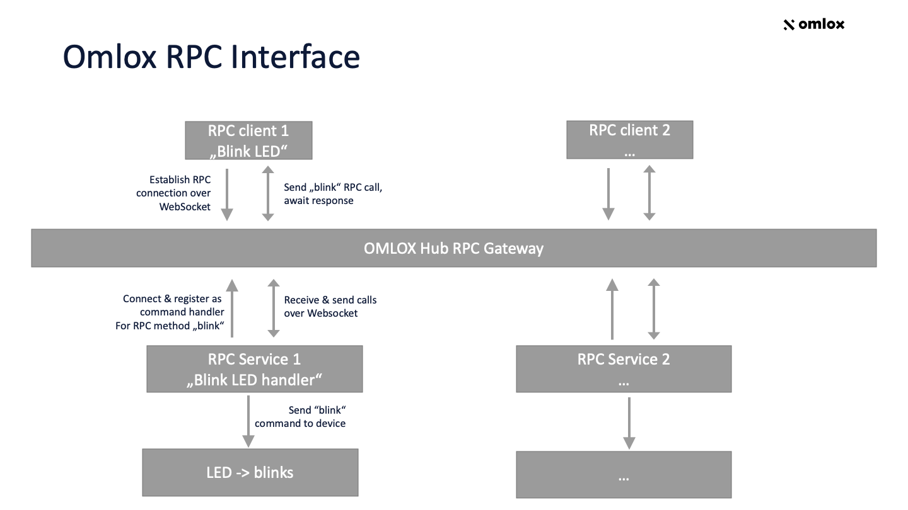

RPC Interface
The DeepHub® can act as a Remote Procedure Call (RPC) gateway via WebSocket, allowing local devices or services to connect with other devices or services over a local network infrastructure and the internet (which are normally separate from each other and not reachable). This allows for querying of sensor data and device capabilities, or initiating firmware updates as well as other types of information exchange which can be handled via RPC. The DeepHub RPC interface is based on the JSON-RPC exchange format version 2.0 [1].
The image below illustrates the building blocks of the architecture with a simple example data flow:
{kind=link}
The endpoint for the DeepHub RPC interface is: /v1/ws/rpc.
The general data flow is as follows:
A service which provides certain functionality registers itself with the DeepHub and announces that it wants to handle a method. This can be anything from querying sensor data of local tags, managing firmware updates of on-site devices, or remote communication between services. In our example flow, we register for a method named “Blink LED” to control a local LED light.
A client application (e.g. a web browser in the local network or over the internet) can now send the RPC Request with the method name “Blink LED” with optional parameters. The DeepHub will forward this call with the parameters to all services handling the “Blink LED” request.
The services which registered themselves for handling “Blink LED” will receive the client request and reply with an RPC response message.
The DeepHub forwards this response message to the client. By default, only the first response is forwarded and the request is finalized.
Registering for RPC method handling is done by sending an RPC request containing the method name “register”, the “method” parameter, and a name for the method as values in the parameters of the request. Example:
{
"jsonrpc": "2.0",
"method": "register",
"params": {
"method": "Blink LED"
},
"id": 1
}
The DeepHub defines three optional properties for the JSON-RPC Request structure:
stream: When set to true, all responses are continuously forwarded to the client that created the request. The stream will end when the timeout for the request is reached (see timeout description below).
aggregate: All data is combined into a single response and forwarded to the client that created the request. The aggregated result is delivered after each registered handler sends a response or the timeout is reached - whichever comes first.
timeout: The timeout after which the request should expire. The timeout is expressed in milliseconds instead of seconds to allow for realtime applications.
The RPC response for aggregated results combines RPC messages into the result array of the final RPC response, and not only the results. This allows for the collection of error messages between success messages as shown in the example aggregate response below. Here, there is one error message next to a success message:
{
"jsonrpc": "2.0",
"id": 2,
"result": [
{
"jsonrpc": "2.0",
"id": 2,
"result": "blinking"
},
{
"jsonrpc": "2.0",
"error": {
"code": -32601,
"message": "Light is defect"
},
"id": 2
}
]
}
In addition, an optional property “zone_id” with a UUID of an omlox™ zone in the params section of a register request can be used to register for RPC calls for a particular zone. This allows RPC handlers which only work within a zone to avoid processing unnecessary requests (e.g. trying to reach tags which can only be reached when in that zone).
Example Message Flow
Alice registers herself for a method named “hello” and answers everybody who says hello to her with “Hello World!”.
Note: This example explains all intermediate steps of the message flow and thus looks longer-winded than it would be from an application perspective. From an application perspective, a client just sends a request and gets back a reply.
Alice connects to the RPC WebSocket interface of the Hub (e.g. ws://localhost:8081/v1/ws/rpc for a local instance).
Alice registers herself to handle a “hello” method by sending an RPC request to the Hub:
Alice -> Hub:
{
"jsonrpc": "2.0",
"method": "register",
"params": {
"method": "hello",
"zone_id": "123"
},
"id": 1
}
The Hub responds with an ok message:
Hub -> Alice:
{
"jsonrpc": "2.0",
"id": 1,
"result": true
}
Another client, Bob, connects to the Hub and calls the “hello” method. Alice will get this request.
Bob -> Hub:
{
"jsonrpc": "2.0",
"method": "hello",
"id": 2,
"params": {
"zone_id": "123"
}
}
Bob’s message is processed by the Hub and forwarded to Alice.
Hub -> Alice:
{
"jsonrpc": "2.0",
"id": 10000,
"method": "hello"
}
Important details for Hub implementors (not application users): Notice that Alice will see a different id in the request. This is because the Hub uses it’s own IDs and will resolve back to the original ID which the caller used (in our example, Bob used ID 2) when a response is sent by Alice to the Hub. This is a necessary step done to fulfill the requirement of the JSON-RPC specification in order to uniquely relate requests and responses, and to respond with the same ID the client used in the original request sent to the Hub.
Alice can now respond to the hello request reply with a friendly “Hello World!”.
Alice -> Hub:
{
"jsonrpc": "2.0",
"result": "Hello World!",
"id": 10000
}
The hub processes Alice’s message, replaces the ID with the one Bob used in his request, and forwards the response to Bob:
Hub -> Bob:
{
"jsonrpc": "2.0",
"result": "Hello World1!",
"id": 2
}